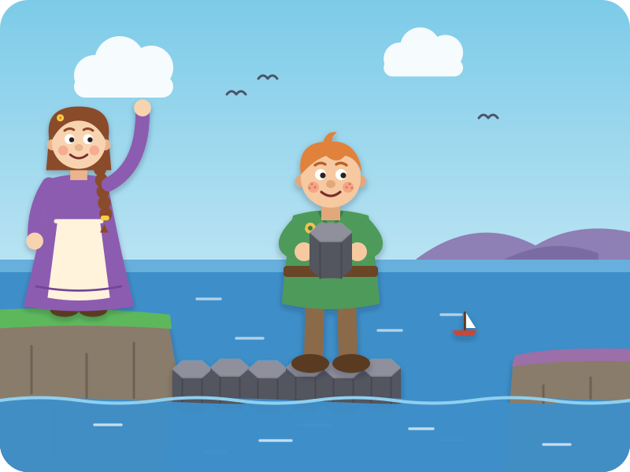
A legend from Ireland
Finn McCool and the Giant's Causeway
"Story, story — are your ears open?" Kai: "Open!"
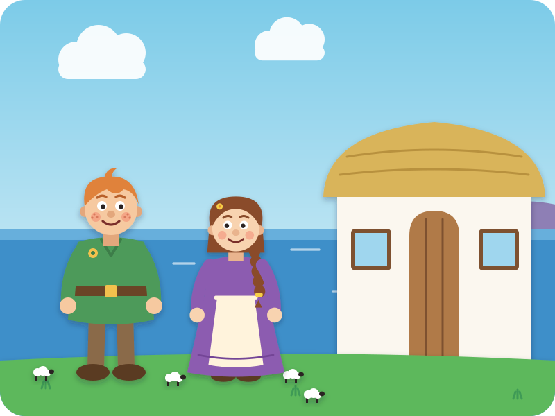
Long ago in Ireland there lived a giant called Finn McCool. He was so big that the sheep looked like daisies round his feet!
Finn lived by the sea with his wife, Oonagh (say OO-na). And Oonagh was very, very clever.
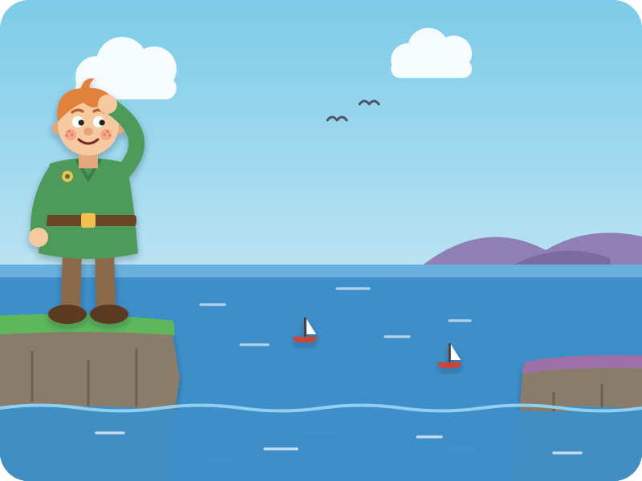
Every day Finn looked across the sea to Scotland. "I'd love to go over there," he said. "But my boots would get soggy!"
Then he had an idea. "I'll make a path of stepping stones — right across the sea!"
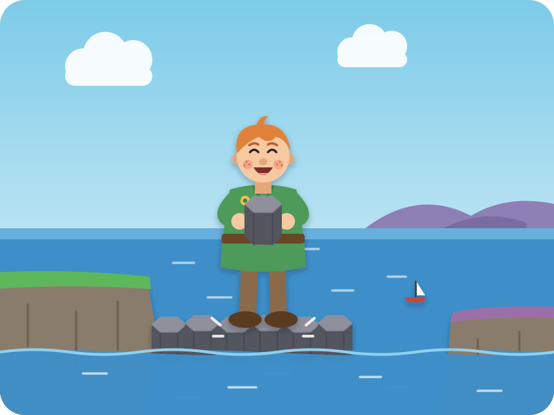
Finn picked up big stones and pushed them down into the sea — one, and another, and another.
Stomp, stomp, stomp across the sea! Kai stomps his feet
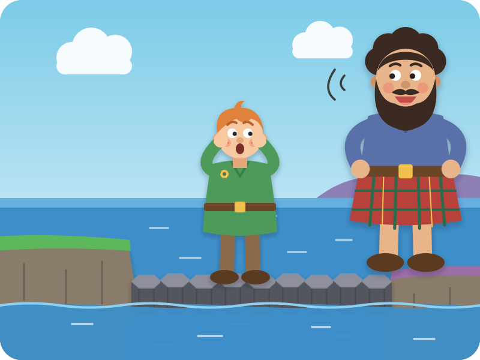
Finn had nearly reached Scotland when he saw a giant on the shore. It was Benandonner (say ben-an-DON-er) — and he was even bigger than Finn!
"WHO is building a path to MY land?" he boomed. Finn gulped. "Oh dear."
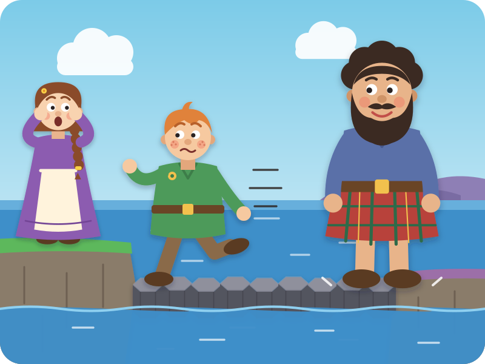
Finn ran all the way home. "Oonagh! Oonagh! A giant is coming, and he's even bigger than me!"
And here came Benandonner: STOMP, STOMP, STOMP across the sea! Kai stomps, big and slow
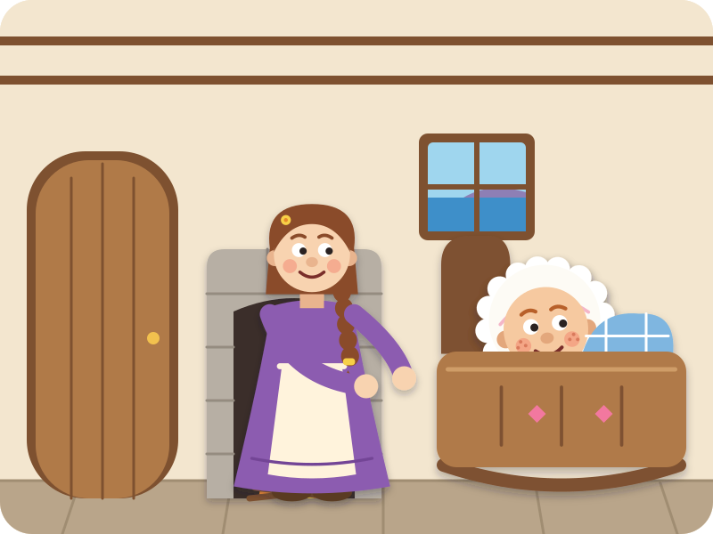
"Don't worry," said Oonagh. "I have a plan." She put a baby bonnet on Finn's head and tucked him into a great big cradle.
"Now you're the baby. Can you cry like a baby?" "Waah!" Kai: "Waah!"
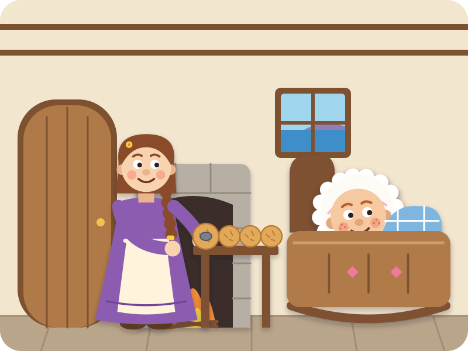
Then Oonagh baked some round griddle cakes. And into one cake — shh! — she pressed a flat, hard stone. Kai whispers: "Shh!"
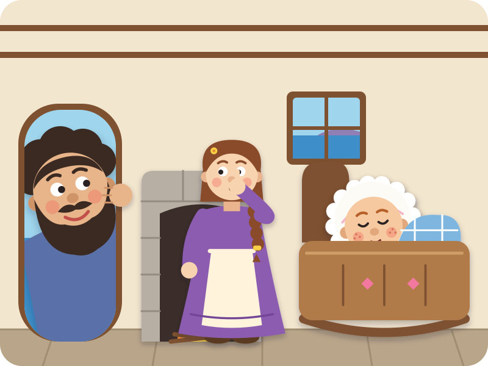
Knock, knock! Kai knocks Benandonner bent down to look in at the door. "Where is Finn McCool?"
"He's out," said Oonagh. "Shh — you'll wake the baby."
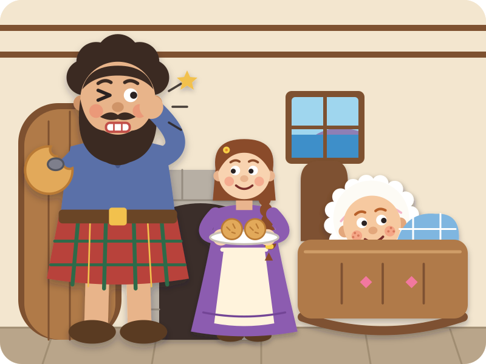
"Have a cake while you wait," said Oonagh. Benandonner took a big bite — CRUNCH!
"Ouch! Too hard!" Kai rubs his cheek
"Too hard?" said Oonagh. "Finn eats those every day."
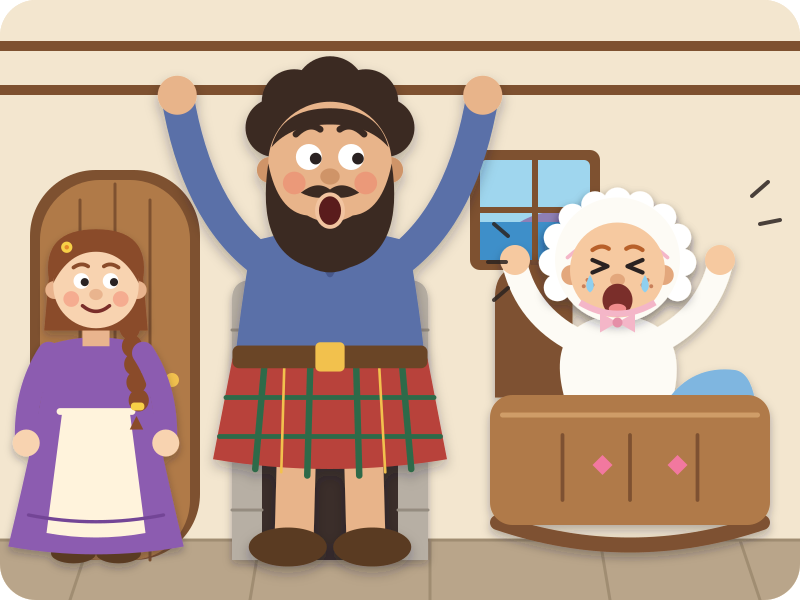
Benandonner tiptoed over to peek at the baby… "WAAH!" Kai's loudest baby cry
"Look at the size of that baby!" gasped Benandonner. "If the baby is this big… how big is the father?!"
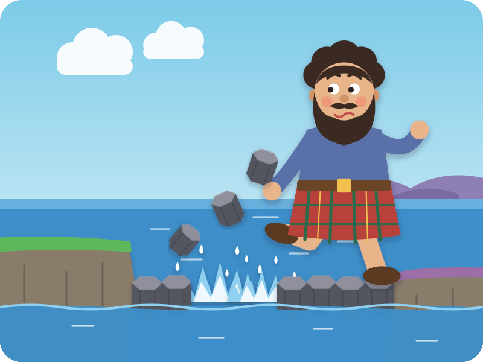
Benandonner ran out of the door and all the way home. Stomp, stomp, stomp across the sea! Kai runs on the spot
And as he ran, he kicked the stepping stones away behind him — splash, splash, splash! — so that nobody could follow.
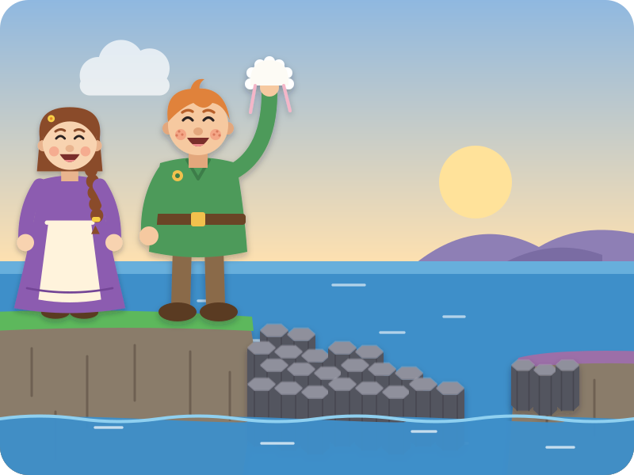
Finn took off his bonnet, and Finn and Oonagh laughed and laughed. Nobody had to fight at all!
And the stones left by the shore? People say you can still see them today. They're called the Giant's Causeway.
The End
"Snip, snap, snout — this tale's told out."
Swipe back to read it again
Driving? Tell it without the page · six beats
The picture book is for home, bedtime, or a passenger. In the car, tell it from memory — bold is Kai's part.
- Finn McCool is a giant in Ireland, so big the sheep look like daisies, and he builds a path of stepping stones across the sea — stomp, stomp, stomp across the sea!
- On the far side is Benandonner, a Scottish giant who is even BIGGER than Finn. Finn runs home: "Oonagh! Oonagh!"
- Here comes Benandonner — STOMP, STOMP, STOMP across the sea! Clever Oonagh puts a baby bonnet on Finn and tucks him in a giant cradle: "Waah!"
- She bakes griddle cakes and hides a hard stone in one — shh!
- Benandonner takes a bite — CRUNCH — "Ouch! Too hard!" Then he peeks at the giant baby: "WAAH!" "If the baby is this big, how big is the father?!"
- He runs home kicking the stones away — splash, splash, splash! — and the stones left behind are the Giant's Causeway.
After the story · car-friendly wondering
"How did Oonagh make the big giant go home without any fighting?"
"Can you do a little baby 'waah' — and then a GIANT baby 'WAAH'?"
"If you built a stepping-stone path, where would it go?"
Where this story comes from
Finn McCool (Fionn mac Cumhaill) is a hero of very old Irish stories, and the tale of the giant baby is one of the best loved. One of the best-known written versions is "A Legend of Knockmany" by the Irish writer William Carleton, which W. B. Yeats included in Fairy and Folk Tales of the Irish Peasantry (1888). In Carleton's telling, Fin M'Coul and his giant relatives are working at the Causeway to make a road across to Scotland; the giant he is afraid of is called Cucullin, not Benandonner; his wife Oonagh bakes iron griddles into the hearts of the bread, so the visitor breaks his teeth on them; and Fin hides in a cradle dressed as a baby. Carleton's ending is rougher — the visitor loses the finger that holds all his strength. The version with the Scottish giant Benandonner, who runs home and tears up the causeway behind him, is the one most often told at the Causeway today; we haven't traced where that version was first written down, and tellings differ in the details. This retelling is our own, for a 4-year-old: a flat stone instead of iron griddles, a sore "ouch" instead of broken teeth, and no fighting or harm at all. The sheep, the boats, the thatched house and the kilt are our picture-book choices. The real Giant's Causeway, on the north coast of County Antrim in Northern Ireland, is natural: about 40,000 mostly six-sided basalt columns that formed when lava cooled and cracked, roughly 50–60 million years ago. It is a UNESCO World Heritage Site.